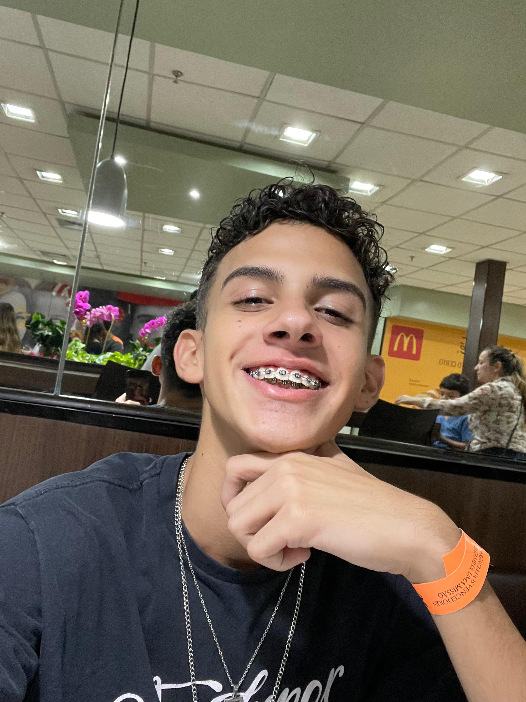
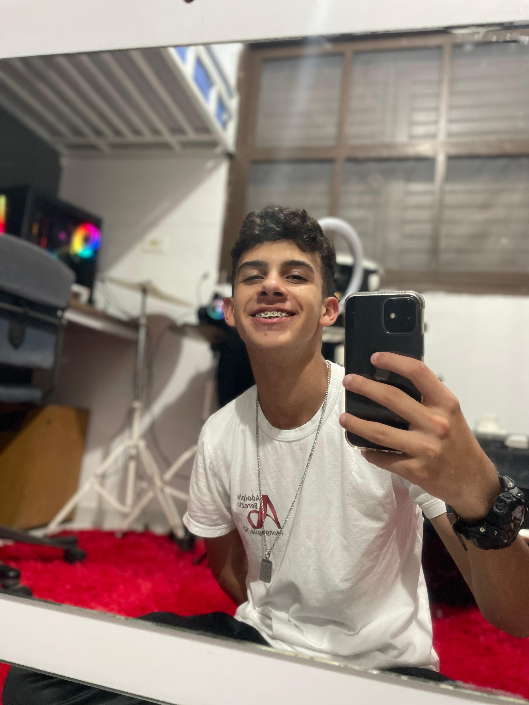
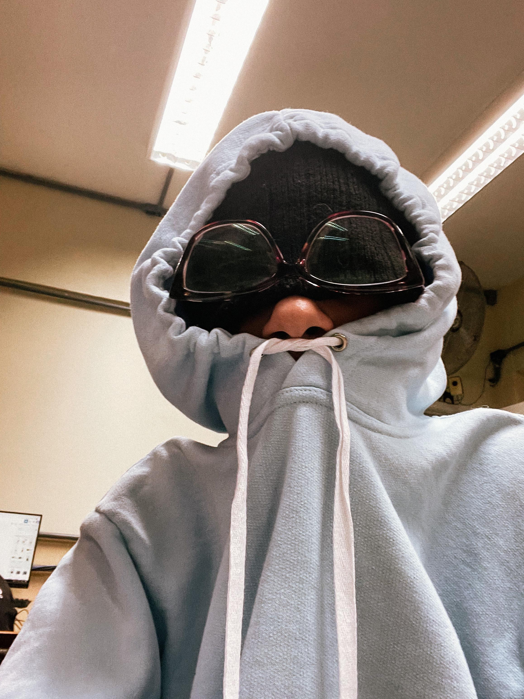

um pouco
Sobre mim
Tenho 17 anos e estou em busca de clientes, visando meu crescimento como fotógrafo e desenvolvedor web.
Elaborei este site com a finalidade de exibir meu curriculo e despertar seu interesse.
Atualmente estudo na ETEC, sou um dos formados em DS(desenvolvimento de sistemas) sou tambem um professor
pedagogico de tecnico e TI, busco crescer nessas areas juntamente com a fotografia que eu tambem pratico por
hobby, mas logo acabou sendo minha profissão
Possuo aspirações profissionais e, atualmente, enxergo uma significativa oportunidade de dar início a esta jornada
eu estou muito preocupado com o futuro e busco ter mais opções de mostra meu trabalho, caso
você poder me ajudar contribuindo para meu crecimento, segue o botão logo abaixo:


